Independent Case Study · Kapruka
Rethinking Kapruka's Post-Purchase Support & Resolution Experience
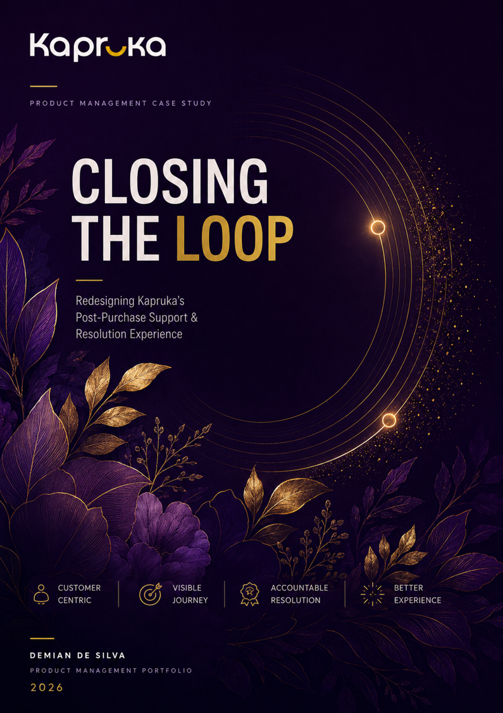
When a Kapruka customer reports a problem a damaged item, a late delivery, a missing order what happens next is unclear, untrackable, and often unresolved. This case study explores how that experience could change.
Problem Context & Definition
Kapruka is Sri Lanka's leading e-commerce platform. While their ordering and delivery experience has matured significantly, the post-purchase support journey specifically complaint handling and resolution remains opaque, slow, and frustrating for customers.
Customers have no visibility into whether their complaint was received, no tracking of resolution progress, and no clear escalation path when issues remain unresolved. This is a product gap, not just a customer service problem.
A structured, transparent, and accountable post-purchase resolution experience could significantly improve customer retention, reduce repeat complaints, and build long-term brand trust in a market where trust is the primary competitive differentiator.
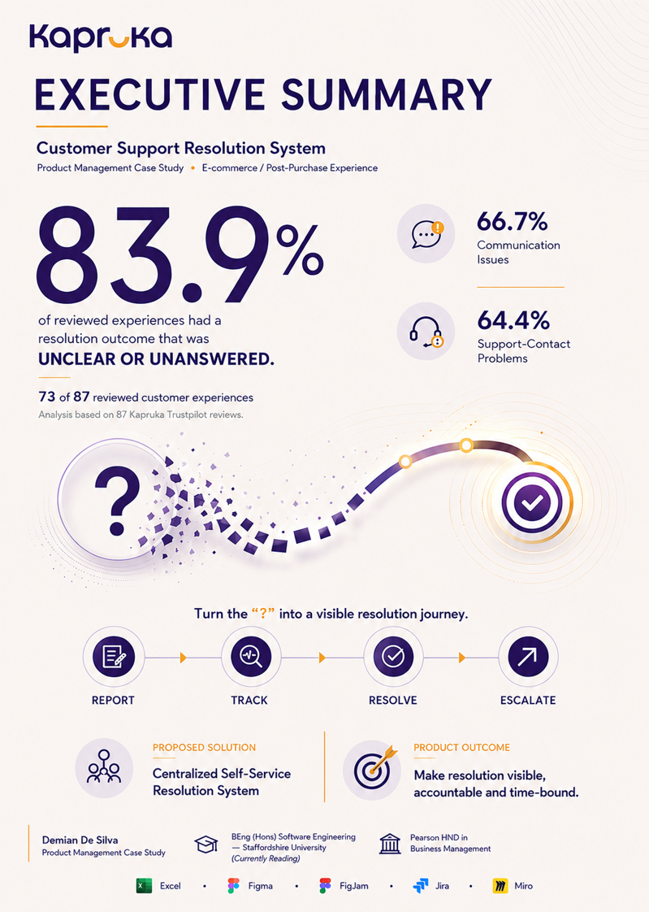
Customer Evidence Research
I analysed 87 customer reviews and support interactions across Google Reviews, Facebook, and Kapruka's own feedback channels. The analysis identified recurring complaint patterns, sentiment clusters, and the specific failure points in the current support journey.
The goal was to avoid building a solution for a problem I assumed existed. The data had to confirm it first.
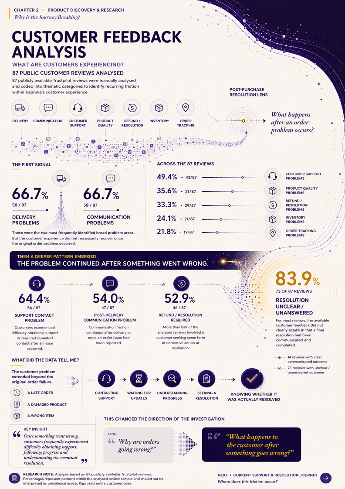
Current Kapruka Support Journey
Before proposing anything, I mapped the current support flow as experienced by the customer from identifying the issue through to (attempted) resolution. The journey map exposed exactly where the experience breaks down.
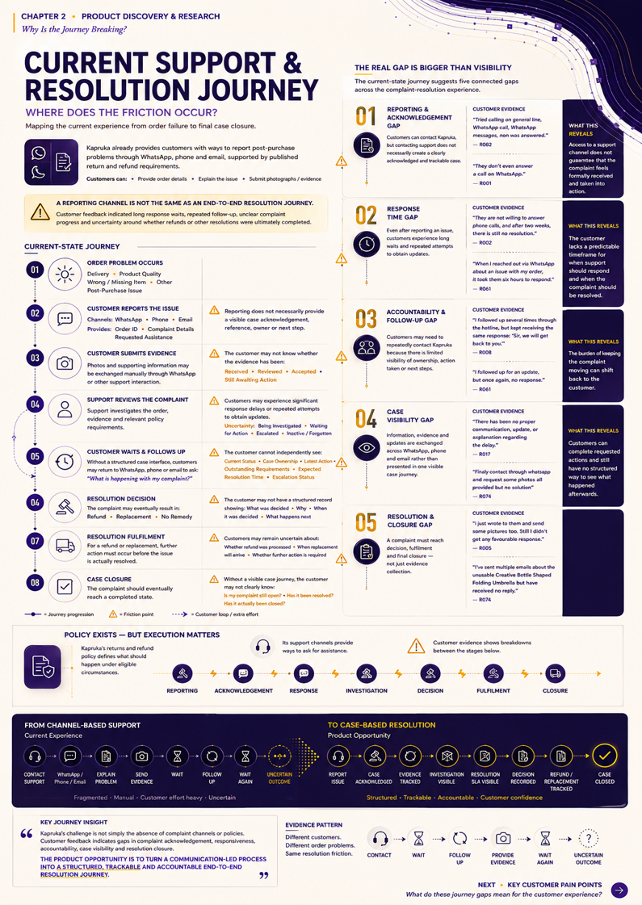
Pain Points
From the review analysis and journey mapping, four primary pain points emerged consistently:
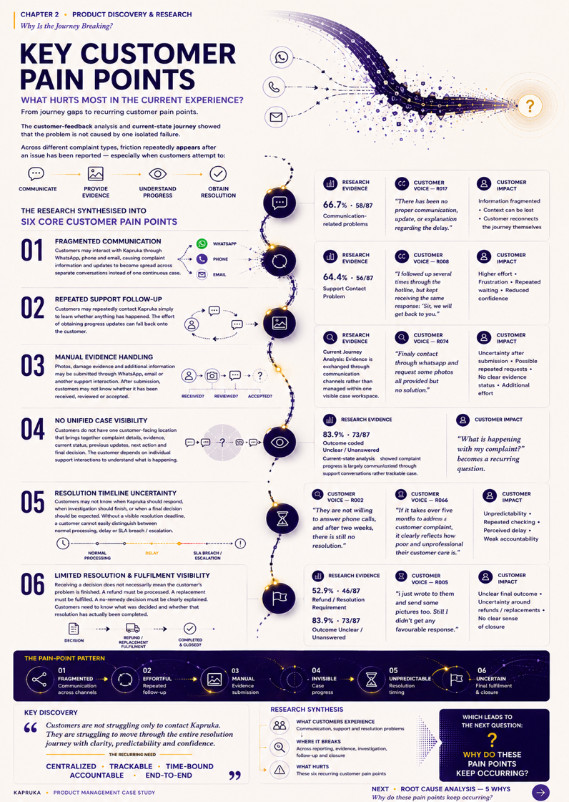
Root Cause Analysis 5 Whys
To avoid solving surface-level symptoms, I applied the 5 Whys technique to the primary pain point: customers don't know what's happening with their complaint.
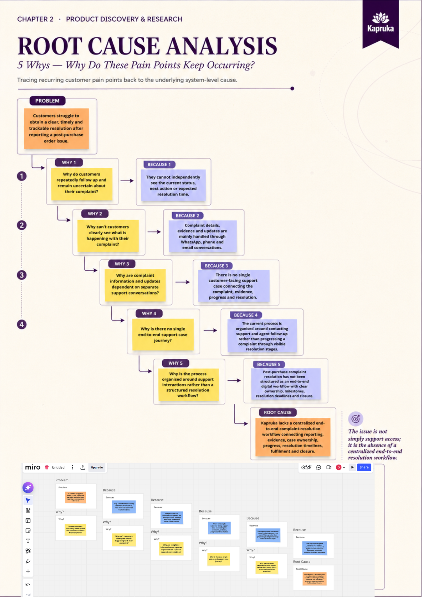
Jobs to Be Done
Using the Jobs to Be Done framework, I identified the core functional, emotional, and social jobs customers are hiring the complaint system to do going beyond "submit a complaint" to understand the real outcomes they need.
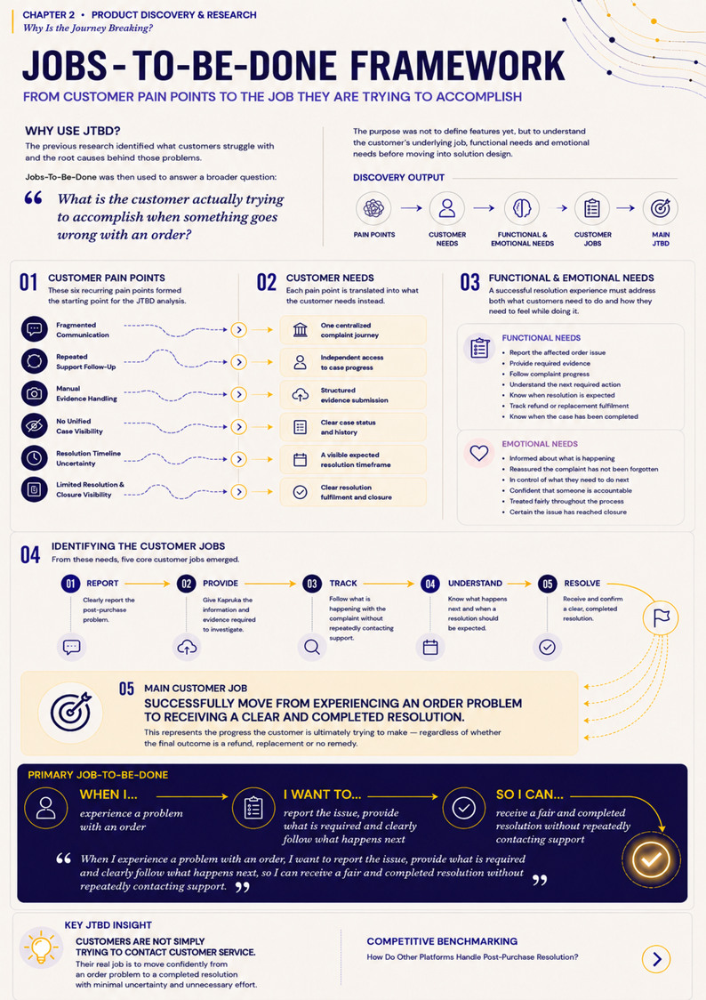
Product Opportunity
The root cause analysis and JTBD work made the product opportunity clear: Kapruka needs a structured, transparent, customer-facing complaint resolution experience built as a product feature, not a back-office process.
This is not about adding a chatbot or a contact form. It is about building a resolution journey with clear ownership, SLA-backed timelines, customer visibility, and escalation logic.
How might we give Kapruka customers full visibility and confidence in their complaint resolution journey from submission to close so that even when something goes wrong, the experience strengthens rather than erodes their trust?
Alternative Approaches
Before committing to a solution, I evaluated four distinct approaches to solving the post-purchase support problem:
RICE Prioritisation
I applied the RICE scoring framework (Reach, Impact, Confidence, Effort) to evaluate the four solution approaches objectively:
| APPROACH | REACH (users/month) | IMPACT (1–3) | CONFIDENCE (%) | EFFORT (1–5) | RICE SCORE ((R × I × C) ÷ E) |
|---|---|---|---|---|---|
| Centralized Self-Service Resolution ✓ | 360 | 3 | 70% | 3 | 252 |
| Dedicated Human Case Ownership | 360 | 3 | 65% | 4 | 175.5 |
| Intelligent Support & Escalation | 360 | 2 | 85% | 5 | 122.4 |
| Automated Resolution Communication | 360 | 1 | 45% | 2 | 81 |
Centralized Self-Service Resolution was selected as the highest-priority solution based on RICE (252), driven by high reach and strong impact/confidence relative to effort.
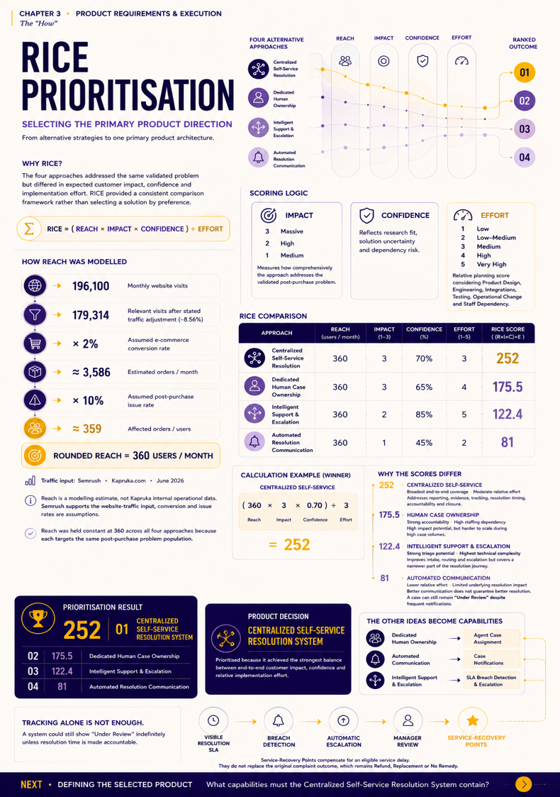
Proposed Solution
The proposed solution is an in-app Post-Purchase Resolution Centre a dedicated complaint management experience built into the Kapruka platform that gives customers full transparency and accountability throughout their resolution journey.
Core features of the proposed solution:
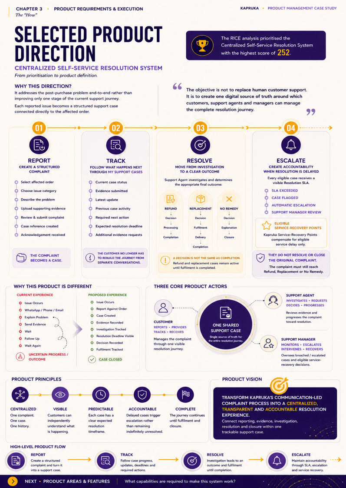
Customer Experience / User Flow
The proposed customer journey moves from a fragmented, opaque experience to a structured, trackable resolution flow:
At any SLA breach point, the system automatically escalates to a senior agent and notifies the customer.
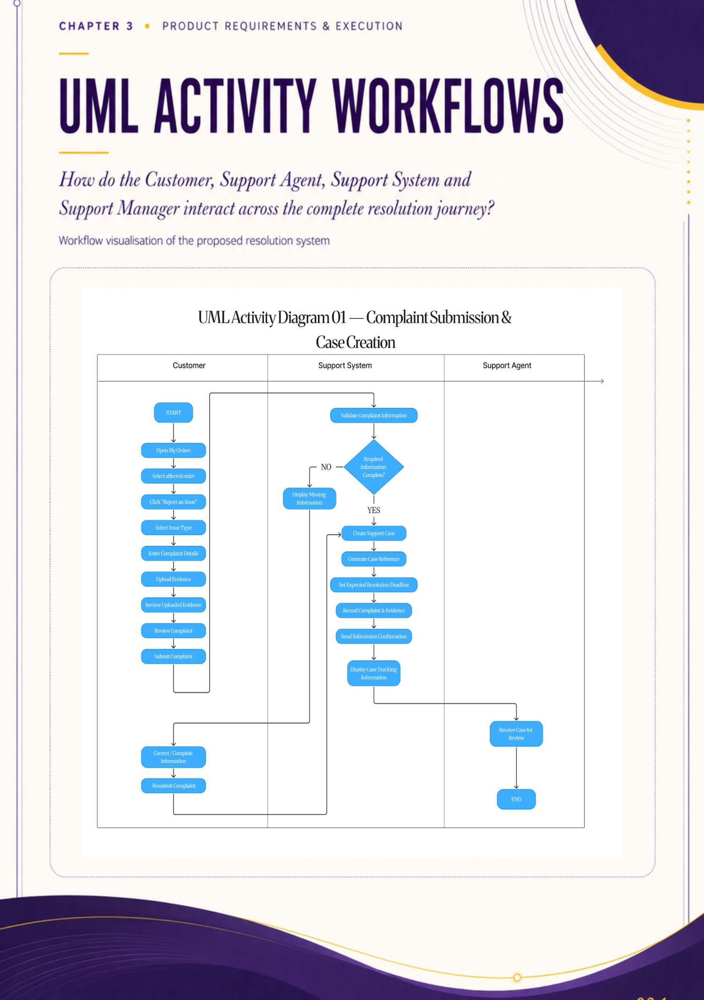
High-Fidelity Figma Screens
High-fidelity Figma prototypes were designed for the key screens of the Resolution Centre, including the complaint submission flow, status tracker, and escalation modal.
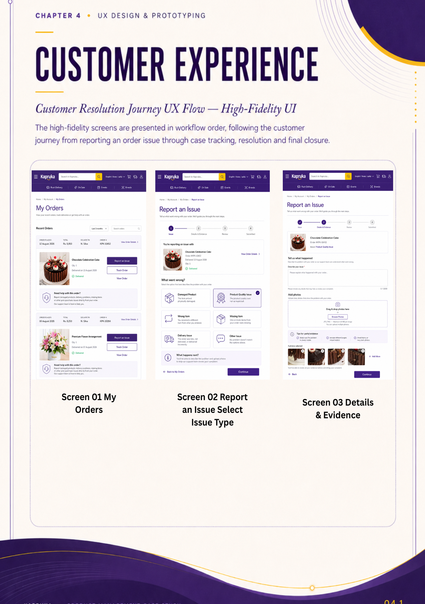
SLA & Escalation Logic
The proposed SLA framework defines response time targets by complaint severity and builds automatic escalation triggers when those targets are breached:
| Complaint Type | Initial Response SLA | Resolution SLA | Escalation Trigger |
|---|---|---|---|
| Missing order | 2 hours | 24 hours | At 24h breach → Senior agent |
| Damaged item | 4 hours | 48 hours | At 48h breach → Manager review |
| Late delivery | 4 hours | 48 hours | At 48h breach → Senior agent |
| Incorrect item | 2 hours | 24 hours | At 24h breach → Senior agent |
| General enquiry | 8 hours | 72 hours | At 72h breach → Team lead |
Service-Recovery Points
Service recovery is not just about fixing the problem it is about restoring the customer relationship. The proposed system includes structured recovery options tied to complaint type and severity:
Jira Implementation Readiness
The proposed solution was broken down into a sprint-ready Jira backlog with epics, stories, and acceptance criteria demonstrating how this case study translates into real delivery.
Success Metrics
A successful Resolution Centre should move the needle on these measurable outcomes:
Reflection / What I Learned
This case study reinforced one belief above all others: the best product thinking starts with evidence, not with assumptions.
The 87 reviews I analysed weren't just data they were real people describing real frustration. The 5 Whys exercise showed me that what looks like a customer service failure is often a product failure at its root. The RICE scoring forced me to confront my own biases about which solution "felt" right.
Most importantly, this case study showed me that the post-purchase experience is not a cost centre. It is a retention product. And building it properly requires the same rigour, the same evidence, and the same accountability that you would bring to building anything else.
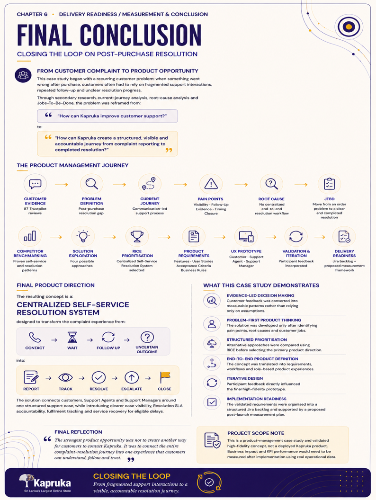
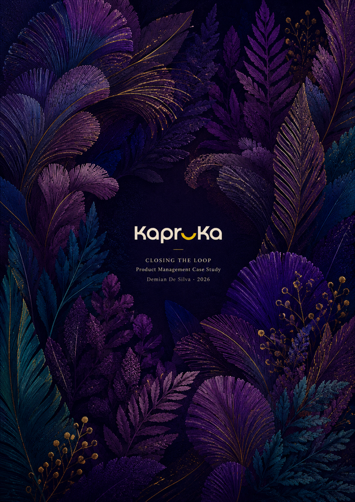